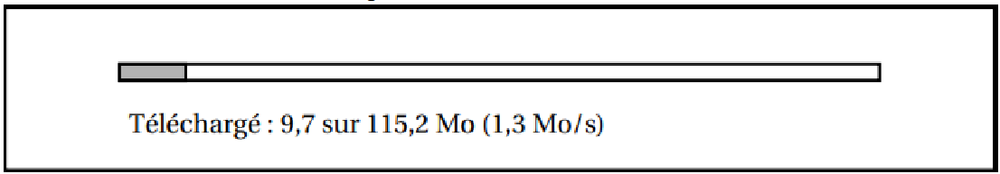
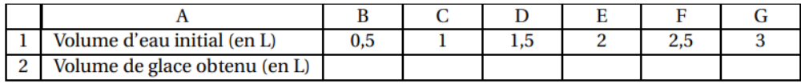
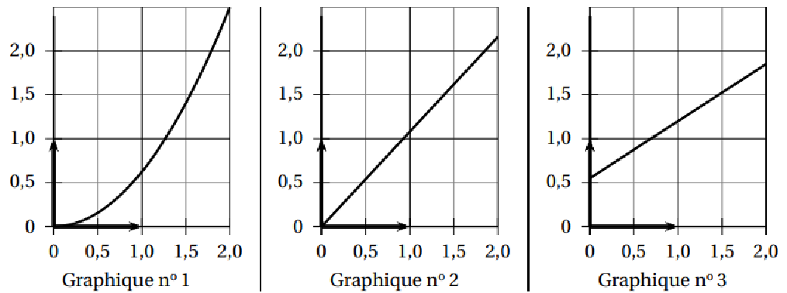
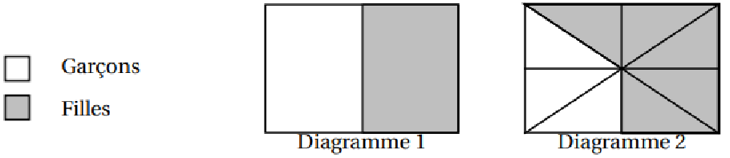
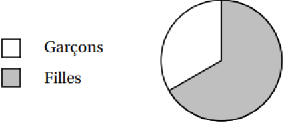
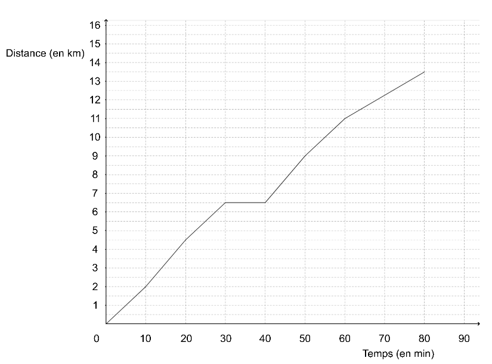

📘 Définition
Deux grandeurs sont proportionnelles si l’on passe de l’une à l’autre en multipliant toujours par le même nombre : le coefficient de proportionnalité.
✔️ Situation proportionnelle ⇔ points alignés avec l’origine.
❌ Alignés sans origine ou non alignés ⇒ non proportionnel.
✅ Proportionnel (avec O)
❌ Alignés sans O
❌ Points non alignés
3. Pourcentages
📖 Définition
Un pourcentage est une proportion exprimée sur 100. « \( t \% \) » signifie \( \frac{t}{100} \).
📊 Prendre un pourcentage
560 élèves, 35% sont demi-pensionnaires. Combien ?
\(560 \times 0,35 = 196\)
📈 Calculer un pourcentage
80 demi‑pensionnaires sur 250. Quel % ?
\(\frac{80}{250} = 0,32 = 32\%\)
📈 Augmentation et réduction (taux d'évolution) – Explications détaillées
🔍 Pourquoi ces formules ?
Augmenter un nombre de \(p\%\) signifie qu’on lui ajoute \(p\%\) de sa valeur initiale :
\(x_{\text{final}} = x_{\text{initial}} + \frac{p}{100} \times x_{\text{initial}} = x_{\text{initial}} \times \left(1 + \frac{p}{100}\right)\).
De même, diminuer de \(p\%\) revient à soustraire \(p\%\) de la valeur initiale :
\(x_{\text{final}} = x_{\text{initial}} - \frac{p}{100} \times x_{\text{initial}} = x_{\text{initial}} \times \left(1 - \frac{p}{100}\right)\).
Le facteur \(\left(1 \pm \frac{p}{100}\right)\) s’appelle le coefficient multiplicateur.
Un blouson coûte 80 €. Pendant les soldes, il bénéficie d’une réduction de 40%. Quel est son nouveau prix ?
✅ Prix final = 134,40 € (baisse globale 44%, et non 50%).
⚠️ Les pourcentages ne s’additionnent pas : on multiplie les coefficients.
4. Échelles – Définition et exemple détaillé
📐 Définition
L’échelle d’une carte (ou d’un plan) est le coefficient de proportionnalité qui permet de passer des distances réelles aux distances sur le plan. Elle s’écrit généralement sous la forme \(1 / k\) (par exemple \(1/25000\)).
\[ \text{Échelle} = \frac{\text{distance sur le plan}}{\text{distance réelle}} \quad (\text{mêmes unités}) \]
Cela signifie que 1 cm sur le plan représente \(k\) cm dans la réalité.
Une carte routière est à l’échelle 1/25 000. a) Quelle distance réelle correspond à 12 cm sur la carte ? b) Quelle distance sur la carte représente 6 km dans la réalité ?
a) Étape 1 : 1 cm sur la carte → 25 000 cm réels.
Étape 2 : 12 cm sur la carte → \(12 \times 25\,000 = 300\,000\) cm.
Étape 3 : Convertir en km : 300 000 cm = 3 000 m = 3 km.
b) Étape 1 : 6 km = 600 000 cm (même unité que le plan).
Étape 2 : Distance sur la carte = \(\frac{600\,000}{25\,000} = 24\) cm.
✅ 12 cm sur la carte représentent 3 km réels ; 6 km réels sont représentés par 24 cm sur la carte.
5. Grandeurs produit et quotient – Définitions et exemples détaillés
✖️ Grandeur produit – Définition
Une grandeur produit est obtenue en multipliant deux grandeurs entre elles. Son unité est le produit des unités de chaque grandeur.
Exemples : la surface (longueur × largeur) s’exprime en m² ; l’énergie électrique (puissance × durée) en kWh.
➗ Grandeur quotient – Définition
Une grandeur quotient est obtenue en divisant une grandeur par une autre. Son unité est le quotient des unités.
Exemples : la vitesse (distance ÷ temps) s’exprime en km/h ou m/s ; le débit (volume ÷ temps) en L/min.
Exemple grandeur produit : Calculer la surface d’un champ rectangulaire de 120 m sur 80 m.
✅ Grandeur produit : kilowatt × heure = kilowattheure.
Exemple grandeur quotient : Une voiture parcourt 150 km en 2 h 30 min. Quelle est sa vitesse moyenne ?
2 h 30 = 2,5 h ; vitesse = \(\frac{150}{2,5} = 60\) km/h.
✅ Grandeur quotient : distance ÷ temps. L’unité km/h est le quotient de km par h.
Autre grandeur quotient : Un robinet débite 120 litres en 2 minutes. Quel est son débit ?
Débit = \(\frac{120}{2} = 60\) L/min.
✅ Grandeur quotient : volume ÷ temps.
6. Agrandissement & réduction
📏 Définition
Agrandir ou réduire une figure, c’est multiplier toutes ses longueurs par un même nombre strictement positif \(k\), appelé rapport d’agrandissement ou de réduction.
- Si \(k > 1\) : agrandissement.
- Si \(0 < k < 1\) : réduction.
- Les aires sont multipliées par \(k^2\).
- Les volumes sont multipliés par \(k^3\).
- Les angles restent inchangés (la figure est « semblable »).
Un rectangle mesure 6 cm sur 4 cm. On l’agrandit avec un coefficient \(k = 2,5\). Quelles sont les nouvelles dimensions ? Quelle est la nouvelle aire ?
Nouvelle longueur = \(6 \times 2,5 = 15\) cm ; nouvelle largeur = \(4 \times 2,5 = 10\) cm.
✅ Vérification : \(15 \times 10 = 150\) cm² (l’aire a bien été multipliée par \(k^2\)).
7. Les ratios – Définition et exemples détaillés
🔢 Définition
Deux nombres \(a\) et \(b\) sont dans le ratio \(c : d\) (avec \(c\) et \(d\) strictement positifs) lorsque \(\frac{a}{c} = \frac{b}{d}\).
Le total des parts dans le ratio est \(c + d\). Ainsi, \(a\) représente la fraction \(\frac{c}{c+d}\) du total, et \(b\) représente \(\frac{d}{c+d}\) du total.
On peut étendre cette notion à trois grandeurs ou plus : \(a, b, c\) sont dans le ratio \(e : f : g\) si \(\frac{a}{e} = \frac{b}{f} = \frac{c}{g}\).
Un pirate et son capitaine se partagent un butin de 350 pièces d’or selon le ratio 3:4. Combien chacun reçoit-il ?
3
:
4
Étape 1 : Total des parts = \(3 + 4 = 7\).
Étape 2 : Valeur d’une part = \(350 \div 7 = 50\) pièces.
Ces exercices sont inspirés d'annales. Pour chaque question, saisissez votre réponse puis cliquez sur "Vérifier".
📱 Exercice 1 : Téléchargement
Brevet
On considère la fenêtre de téléchargement ci-dessous.

Si la vitesse de téléchargement reste constante, faudra-t-il plus d’une minute et vingt-cinq secondes pour que le téléchargement se termine ?
❄️ Exercice 2 : Eau et glace
Tableau & graphique
Lorsqu’on fait geler de l’eau, le volume de glace obtenu est proportionnel au volume d’eau utilisé. En faisant geler 1,5 L d’eau on obtient 1,62 L de glace.
1. Montrer qu’en faisant geler 1 L d’eau, on obtient 1,08 L de glace.
2. On souhaite compléter le tableau ci-dessous à l’aide d’un tableur. Quelle formule peut-on saisir dans la cellule B2 avant de la recopier vers la droite jusqu’à la cellule G2 ?

3. Quel graphique représente le volume de glace obtenu (en L) en fonction du volume d’eau contenu dans la bouteille au départ (en L) ?
On rappelle que toute réponse doit être justifiée.

🎨 Exercice 3 : Vrai ou faux ?
Raisonnement
Un peintre souhaite repeindre les volets d’une maison. Il constate qu’il utilise 1 pot pour mettre une couche de peinture sur l’intérieur et l’extérieur d’un volet. Il doit peindre ses 4 paires de volets et mettre sur chaque volet 3 couches de peinture. Il affirme qu’il lui faut 2 pots de peinture. Justifier.
👧📊 Exercice 4 : Répartition dans une classe
Diagrammes & angles
Dans une classe de 24 élèves, il y a 16 filles.
1. L’un des deux diagrammes ci-dessous peut-il représenter correctement la répartition des élèves de cette classe ? Justifier.

2. On a représenté la répartition des élèves de cette classe par un diagramme circulaire. Écrire le calcul permettant de déterminer la mesure de l’angle du secteur qui représente les garçons.

🌾 Exercice 5 : Mélange de graines
Ratios & budget
L’agriculteur souhaite semer un mélange de graines (blé, seigle et pois) en respectant les indications suivantes.
💰 Prix • Blé : 1,40 €/kg • Seigle : 1,30 €/kg • Pois : 2,10 €/kg
📦 Répartition • Blé : 80 kg • Seigle : 60 kg • Pois : 50 kg
1. Un vendeur lui propose des sacs contenant un mélange de blé, seigle, et pois selon le ratio 16 : 12 : 8. Montrer que la composition de ce sac ne respecte pas l’indication 2.
2. L’agriculteur souhaite semer le mélange de graines sur la partie du champ représentée par le triangle CDE dont l’aire mesure 48 600 m². Il a calculé qu’il doit prévoir 388,80 kg de blé pour respecter la répartition indiquée dans l’énoncé. Justifier le calcul de l’agriculteur.
3. L’agriculteur dispose d’un budget de 1 500 € pour semer le mélange de graines sur la totalité des 48 600 m² de terrain. Il a calculé qu’il doit acheter 388,80 kg de blé, 291,6 kg de seigle et 243 kg de pois pour respecter la répartition indiquée dans l’énoncé. L’agriculteur dispose-t-il d’un budget suffisant ?
🏃 Exercice 6 : Course à pied (Brevet Amérique du Nord 2025)
Brevet 2025
À l’approche d’une course organisée par son collège, Malo s’entraîne sur un parcours de 13,5 km. La courbe ci-dessous représente la distance parcourue par Malo (en kilomètres) en fonction du temps écoulé (en minutes).

1. Le temps et la distance parcourue par Malo sont-ils proportionnels ?
2. Quelle distance Malo a-t-il parcourue au bout de 20 minutes ? (Aucune justification n’est attendue.)
3. Combien de temps a-t-il mis pour faire les 9 premiers kilomètres ? (Aucune justification n’est attendue.)
4. Quelle est la vitesse moyenne de Malo lors de cette course ? Exprimer le résultat au dixième de km/h près.
5. Louise et Hillal ont couru sur le même parcours de 13,5 km. Louise a une vitesse régulière égale à 12 km/h et Hillal a une vitesse régulière égale à 10 km/h.
(a) Sachant que Louise et Hillal sont partis en même temps, qui a été le premier à franchir la ligne d’arrivée ?
(b) Quelle distance sépare Louise et Hillal, lorsque le premier des deux franchit la ligne d’arrivée ?